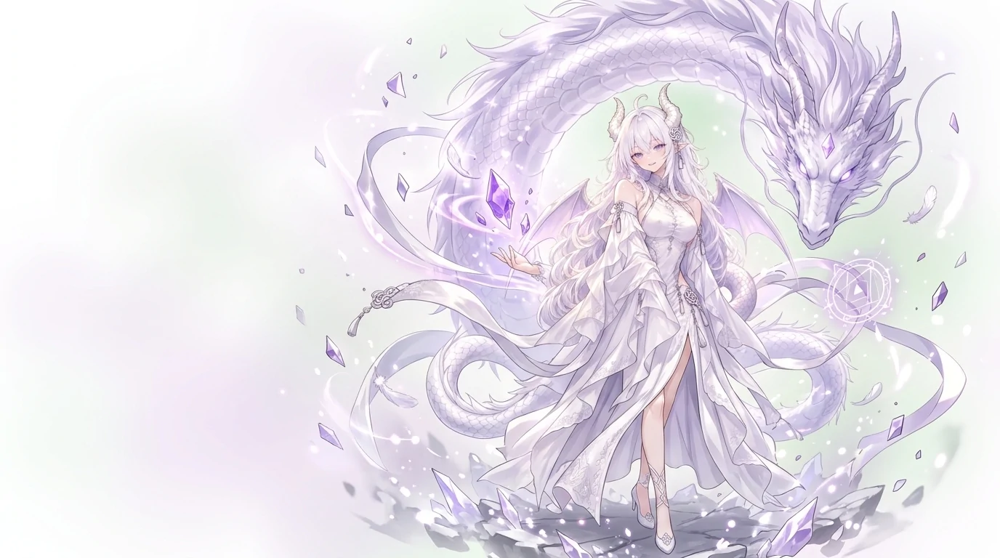

支持一键配置并完美适配 NewAPI 多协议配置
常用应用支持
- Cherry Studio
- CC Switch
- AionUI
- 流畅阅读
- DeepChat
- AQBot
- Lobe Chat 官方示例
- AI as Workspace
- AMA 问天
- OpenCat

支持一键配置并完美适配 NewAPI 多协议配置
常用应用支持
配置 · 连接 · 监控
三步上手
OpenAI 兼容与 Gemini 原生两条路由共用同一个站点令牌，按量计费，无需改动业务代码。
端点
把站点地址作为 base_url 替换进现有客户端即可迁移，无需改动业务代码。
POST/v1beta/models/{model}:generateContent
REQUEST
curl -X POST "/v1beta/models/{model}:generateContent" \
-H "x-goog-api-key: sk-••••" \
-d '{
"contents": [
{ "role": "user",
"parts": [{ "text": "..." }] }
]
}'
RESPONSE
{
"candidates": [{
"content": { "parts": [{ "text": "Gemini request served." }] }
}],
"usageMetadata": { "totalTokenCount": 25 }
}
93 MS · 25 TOKENS · COST $0.00075STREAM · SSE
优化的网络架构，确保毫秒级响应时间。
企业级安全性，提供全面的权限管理。
多区域部署，实现稳定的全球访问。
兼容常见 AI 应用工作流的 API 路由。
支持高并发和自动负载均衡。
按量付费，实时监控使用情况。
多用户管理，灵活分配权限。
社区驱动、可自托管、易于扩展。
工作流程
添加 API 密钥，设置渠道并配置访问权限。
通过 OpenAI、Claude、Gemini 以及其他兼容 API 路由接入。
通过实时分析跟踪用量、成本和性能。
Service notice · 服务范围
根据中国大陆的法律法规限制，本站不为来自中国大陆的用户提供任何大模型服务，请来自中国大陆的用户自觉停止访问本站
感谢配合。请手动关闭此标签页。